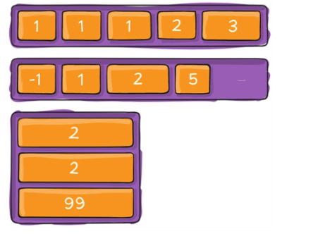

Flexbox là một kiểu dàn trang (layout mode) mà nó sẽ tự cân đối kích thước của các phần tử bên trong để hiển thị trên mọi thiết bị. Nói theo cách khác, bạn không cần thiết lập kích thước của phần tử, không cần cho nó float, chỉ cần thiết lập nó hiển thị chiều ngang hay chiều dọc, lúc đó các phần tử bên trong có thể hiển thị theo ý muốn.
Hiện nay, theo lời khuyên từ Mozilla thì chúng ta sử dụng Flexbox để thiết lập bố cục trong phạm vi nhỏ (ví dụ như những khung trong website) và khi thiết lập bố cục ở phạm vi lớn hơn (như chia cột website) thì vẫn nên sử dụng kiểu thông thường là dàn trang theo dạng lưới (grid layout).
Thuật ngữ các thành phần trong Flexbox. Trước khi đi vào tìm hiểu sâu hơn về Flexbox, chúng ta cần nắm qua cấu trúc của Flexbox là như thế nào và một số thuật ngữ liên quan. Dưới đây là sơ đồ cấu trúc Flexbox .

Hai thành phần quan trọng nhất trong một bố cục Flexbox là gồm container và item:


Ngoài hai thành phần chính đó, chúng ta có thể thấy hình trên sẽ có:

Để sử dụng flex trong css thì đơn giản là chúng ta chỉ cần khai báo thuộc tính display: flex
.container { display: flex; /* hoặc inline-flex */}
Lưu ý: các cột CSS thông thường không sử dụng được trong flex container.
Thuộc tính flex-direction xác định hướng của main-axis để container sắp xếp các item.


Cú pháp
.container { justify-content: flex-start | flex-end | center |
space-between | space-around | space-evenly; }
Các tham số:

Theo mặc định, item sẽ tự động thay đổi kích thước phần tử để nó luôn hiển thị trên cùng một dòng dù bạn có resize trình duyệt theo kích thước nào, điều này dễ làm cho nội dung bên trong (nếu có) bị giãn hay ép nhỏ lại, có thể gây xấu giao diện. Vì vậy, ta có thuộc tính flex-wrap cho phép item tự động xuống dòng khi kích thước container thay đổi.
Cú pháp:
.container{ flex-wrap: nowrap | wrap | wrap-reverse; }
Tham số:
Thuộc tính flex-flow sử dụng để gộp chung hai thuộc tính flex-direction và flex-wrap.
Cú pháp:
flex-flow: <'flex-direction'> || <'flex-wrap'>
Theo mặc định, các item bên trong sẽ bắt đầu từ main start đến main end, tuy nhiên, đôi khi container vẫn còn khoảng trống. Vì vậy, bạn có thể sử dụng thuộc tính justify-content để điều chỉnh vị trí bắt đầu và căn chỉnh các item bên trong container theo dọc theo trục main axis, chiều ngang hoặc chiều dọc tùy thuộc vào flex-direction.
Cú pháp:
.container { justify-content: flex-start | flex-end | center |
space-between | space-around | space-evenly; }
Các tham số:
Thuộc tính align-items sử dụng để điều chỉnh vị trí bắt đầu và căn chỉnh các item bên trong container theo dọc theo trục cross axis, chiều ngang hoặc chiều dọc tùy thuộc vào flex-direction.
Cú pháp:
.container { align-items: stretch | flex-start | flex-end | center |
baseline; }
Thuộc tính align-content sử dụng để căn chỉnh khoảng cách các item bên trong container theo dọc theo trục cross axis, chiều ngang hoặc chiều dọc tùy thuộc vào flex-direction.
Cú pháp:
.container { align-content: flex-start | flex-end | center |
space-between | space-around | stretch; }

Theo mặc định, các item sẽ hiển thị theo thứ tự xuất hiện trong HTML, nhưng với thuộc tính order, bạn có thể sắp xếp lại vị trí sắp xếp của các item.
Cú pháp:
.item { order: ; /* mặc định là 0 */ }

Thuộc tính flex-grow cho phép các phần tử giãn theo độ rộng của container.
Cú pháp
.item { flex-grow: ; /* mặc định là 0 */ }
flex-shrink
Thuộc tính flex-shrink ngược lại với thuộc tính flex-grow ở trên, nó không giãn ra mà lại co lại khi chúng ta thay đổi độ rộng của container.
Cú pháp:
.item { flex-shrink: ; /* mặc định là 1 */ }
Thuộc tính flex-basis sử dụng để xác định độ dài ban đầu của một item.
Cú pháp
.item { flex-basis: | auto; /* mặc định là auto */ }
Thuộc tính flex sử dụng để gộp chung ba thuộc tính flex-grow, flex-shrink và flex-basis.
Cú pháp:
.item { flex: none | [ <'flex-grow'> <'flex-shrink'> || <'flex-basis'> ] }

Thuộc tính align-self có tác dụng tương tự như align-items của phần container nhưng sử dụng riêng cho từng item, bạn có thể dùng nó để đặt lại vị trí cho một số item mà align-items đã quy định.
.item { align-self: auto | flex-start | flex-end | center | baseline | stretch; }
Align-self cũng có các giá trị giống như align-items đó là: flex-start, flex-end, center, stretch và baseline.